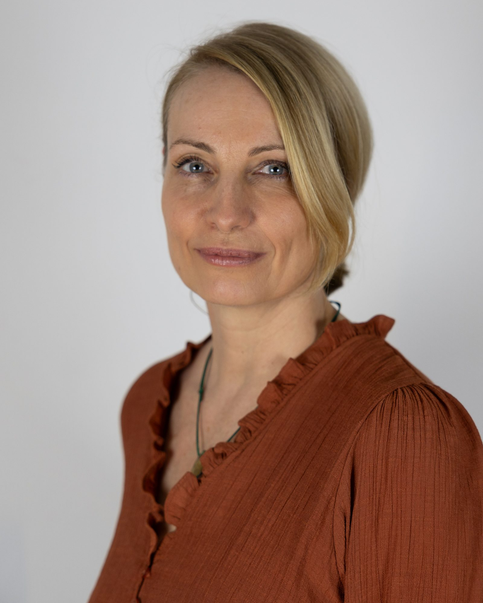

Start / Über mich
Über mich
Kristin Damaschke
Künstlerin, Kunsttherapeutin und Heilpraktikerin für Psychotherapie. Geboren in Riesa, viele Jahre in Hamburg, seit 2021 zu Hause bei Wismar.

Mein Weg
Von der Kunst zum Körper
Die Kunst war zuerst da. Sie hat mich gelehrt, dass sich Inneres zeigen will, auch ohne Worte.
Aus dieser Erfahrung heraus habe ich Intermediale Kunsttherapie studiert und viele Jahre in Kliniken gearbeitet: in der Psychosomatik, in der Psychiatrie und mit Menschen nach großen Belastungen. Dort habe ich gesehen, wie viel sich verändert, wenn Menschen einen Zugang jenseits der Sprache finden.
Mit der Zeit kam der Körper hinzu. Heute arbeite ich vor allem traumasensibel und körperorientiert mit Somatic Experiencing. Die Kunst ist geblieben: als eigener Raum für mich und als stiller Begleiter in meinen Stunden, wenn Worte nicht reichen.
„Alles ist Licht und Schatten, und es geht um den Tanz dazwischen.“
Qualifikationen
Ausbildungen
- seit 2023Somatic Experiencing® (SE) nach Dr. Peter A. Levine, Ausbildung bei Marinka Gattnar (laufend)
- 2018Heilpraktikerin für Psychotherapie (Erlaubnis nach dem Heilpraktikergesetz, Husum)
- 2015–2019Master of Arts Intermediale Kunsttherapie, MSH Medical School Hamburg
- früherDiplom Medien und Information (Dipl. Medok.), HAW Hamburg
Erfahrung
Berufliche Stationen
- Sana Kliniken Lübeck
- Klinikum Schloss Lütgenhof: Stressfolgeerkrankungen, Psychosomatik, Personale Medizin
- Psychiatrische Tagesklinik Glückstadt (Klinikum Itzehoe)
- Vitanas Psychiatrisches Centrum Glückstadt
- Selbstständige Kunsttherapeutin in Wismar und Lübeck
Für Ärztinnen, Kliniken und Kolleginnen
Auf einen Blick
- Berufsbezeichnung
- Heilpraktikerin für Psychotherapie (HeilprG); Kunsttherapeutin M.A.; keine approbierte Psychotherapeutin, keine Kassenzulassung
- Schwerpunkte
- Traumasensible, körperorientierte Arbeit (Somatic Experiencing, in Ausbildung), Nervensystemregulation, Kunsttherapie
- Geeignet für
- Erwachsene mit Stressfolgen, wiederkehrenden emotionalen Mustern, Ängsten, belastenden Erfahrungen; auch begleitend oder im Anschluss an eine Psychotherapie oder Klinik
- Nicht geeignet für
- akute Suizidalität, akute Psychosen, akute Suchterkrankungen; hier bitte ärztliche oder klinische Versorgung
- Orte
- Wismar (Lübsche Straße 71), Praxisraum bei Wismar, online
- Termine
- in der Regel kurzfristig, nach Vereinbarung, auch samstags
- Kosten
- Selbstzahlerleistung, 90 € je 50 Minuten
- Kontakt
- 0163 583 7997 · mail@kristindamaschke.de
Lernen wir uns kennen.
Ein erstes Gespräch am Telefon dauert etwa 15 Minuten. Sie erzählen kurz, was Sie bewegt, und wir klären, ob meine Arbeit zu Ihnen passt. Ganz ohne Verpflichtung.